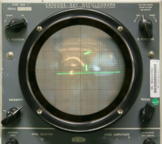
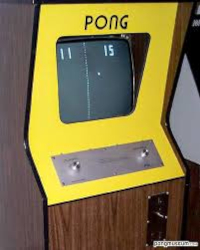
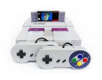

🎮 A História dos Videogames
Desde simples pixels em uma tela até mundos virtuais repletos de realismo e interatividade, os videogames percorreram uma jornada incrível ao longo das décadas. O que começou como uma curiosidade tecnológica se transformou em uma das maiores indústrias do entretenimento mundial, unindo arte, ciência e diversão. Nesta página, você vai conhecer a evolução dos videogames dos primeiros consoles e arcades às plataformas modernas que conquistam milhões de jogadores ao redor do globo.
🕹️ O Início de tudo :
Anos 1950–1960: As origens
Os primeiros passos dos videogames aconteceram em laboratórios e universidades. Experimentos como Tennis for Two (1958) e Spacewar! (1962) mostraram que os computadores podiam ser usados não apenas para cálculos, mas também para diversão e criatividade. Ainda era algo restrito a cientistas e estudantes, mas as bases da indústria já estavam sendo formadas.

Acima estão os registros de Tennis For Two e Space War respectivamente
Anos 1970: O nascimento da indústria :
Foi nessa década que os videogames chegaram ao público. O sucesso de Pong (1972), criado pela Atari, marcou o início dos arcades e dos primeiros consoles domésticos. O Magnavox Odyssey, lançado em 1972, é considerado o primeiro videogame caseiro da história.

Acima os registros do game Pong e do primeiro console de mesa "magnavoxodyssey" respectivamente
Anos 1980: A era dourada dos videogames :
Os arcades dominaram o mundo com títulos como Pac-Man, Donkey Kong e Space Invaders. Em casa, consoles como o Nintendo Entertainment System (NES) e o Sega Master System popularizaram os jogos entre crianças e adultos. Foi também o período em que personagens lendários nasceram, como Mario, Sonic e Link.
Anos 1990: A revolução dos gráficos :
Com a chegada dos consoles de 16 e 32 bits, os gráficos e sons deram um salto de qualidade. O Super Nintendo, o Sega Mega Drive, o PlayStation e o Nintendo 64 marcaram uma geração. Os jogos passaram a ter histórias mais profundas e mundos tridimensionais, tornando-se experiências cada vez mais cinematográficas.

Acima Super Nintendo e Sega Megadrive respectivamente.
Anos 2000: O avanço da internet :
A popularização da internet transformou completamente a forma de jogar. Títulos online e multiplayer, como Counter-Strike, World of Warcraft e Halo, criaram comunidades globais. Além disso, os consoles como PlayStation 2, Xbox e Nintendo Wii trouxeram novas formas de interação e jogabilidade.
Acima Counter Strike e World Of Warcraft respectivamente.
Anos 2010 até hoje: Realismo e conectividade :
Os videogames atingiram um nível impressionante de realismo gráfico e imersão. A realidade virtual, os jogos em nuvem e as plataformas como PlayStation 5, Xbox Series X e Nintendo Switch mostram o quanto a tecnologia evoluiu. Hoje, os games são mais do que entretenimento: são arte, esporte e cultura.
Acima alguns exemplos de realismo no mundo dos games atualmente.